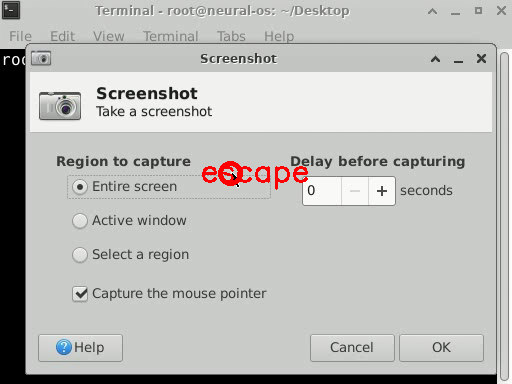
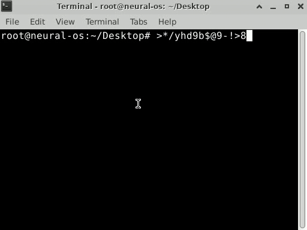
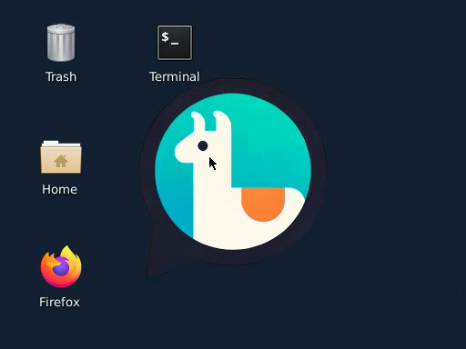
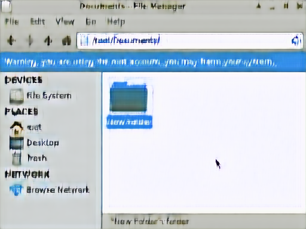
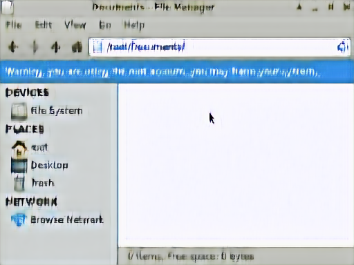
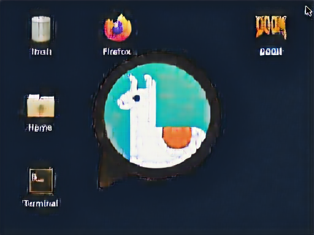

Beyond
ChatGPTWhat else can
AI become?

Yuntian Deng & Bing Yan
Vision 2026 · October 14 · Brantford
I wrote zero code for these slides


Actual screenshot · excerpts from a longer conversation · October 14, 2026
What have you
used AI for?
This desktop is generated by AI
NeuralOS · recorded interactionPredict the next screen

Real recorded screen · NeuralOS research example
A recording gives us the answer

Real recorded input and target · NeuralOS research example
The model makes a prediction

Recorded input and actual model prediction · NeuralOS research
Measure the prediction’s error
Actual research comparison · Terminal should still be visible
Training adjusts the model’s numbers
error
Illustrative weights and update
Repeat across many examples
Across many recorded interactions
Simplified learning loop
Now use the trained model
modelweights stay fixed
Next action, next frame
Same research example · simplified prediction loop
Typing requires precision
 Requested: wikipedia.org
Requested: wikipedia.orgNeuralOS · current demo model (October 2026)
Will the folder still be there?

Create a folder. Close. Reopen.NeuralOS · 2025 model · continuous recording
The folder is gone

NeuralOS · 2025 model · two frames from the same recording
Some facts are off-screen

A folder was
created earlier.
NeuralOS · 2025 model · actual frame; reminder is conceptual
Learning with worked solutions
12 × 34
12 × 4 = 48
12 × 30 = 360
Answer408
Teaching illustration · Implicit chain of thought
Less written working, more training
12 × 34
12 × 4 = 48
12 × 30 = 360
Answer408
Remove a little keep training repeat
Training illustration · stages simplified; the real method removes tokens from the start
An answer without written steps

Actual GPT-2 demo result · captured October 14, 2026 · one example
Can AI guess your word?
“can see in the sky,
around earth, not sun”
Your clue becomes a guess
“around earth, not sun” → moon
You can direct the character in English
“act excited, wave, dance, then sit proudly”
Words become an action sequence
“act excited, wave, dance, then sit proudly”
Ordinary code moves the character
waveCan it count the r’s?
Actual Standard 0.6B result · October 14, 2026 · View captured run ↗
The reality of the Turing test

How could AI help us make a medicine?
Ibuprofen

Bing Yan · illustrative molecular model · hydrogen atoms omitted
A reaction changes the connections

Teaching model · 2 H₂ + O₂ → 2 H₂O
What have other chemists already tried?
“How has making
ibuprofen improved?”

Try it yourself
AskChem · prepared search: ibuprofen synthesis
Six reaction steps became three
reaction steps
reaction steps
Historical ibuprofen process · EPA, 1997 · same target molecule
Does this summary follow?
“Half as many reaction steps
means half the production time.”
A Yes
B We need timing data
Invented summary for discussion · not a recorded AI response
Did a chemical reaction happen?
 →
→
A Different molecule
B Different shape
Butane · illustrative 3D models
Same bonds. Different shape.

Butane · simplified carbon skeletons · hydrogen atoms omitted
EVA-Flow predicts possible molecular shapes
Molecule
+ surroundings
Atoms and bonds supplied
EVA-Flow
Possible
3D shapes
Compare the prediction with a reference
Dataset reference
AI prediction
In a liquid


Near a
protein


EVA-Flow · Table 4 · one molecule, two settings
When should we look for B?
A → B → C
Proposed measurement
B may appear only during the reaction
Teaching snapshots · not measurements or SPARK predictions
SPARK learns from simulated reactions
Training examples
Known reaction steps
→Simulated signals
Using the model
Measurements
+ conditions
→Possible hidden steps
SPARK · simulation-based reaction inference
The top proposal included an extra step
Known simulated reaction
Step 1+Step 2
SPARK’s top proposal
Step 1+Step 2+Extra step
Bing’s saved SPARK demonstration · simulated test case · October 13, 2026
An AI prediction
still needs
a real test.

Try it yourself
What do people actually ask AI?
“In 100 words, explain photosynthesis”
Let’s look

Recorded walkthrough · conversation excerpt
What would you investigate?
Do people ask for
explanations or
finished answers?
You can investigate this too
What would
you build?
How would
you test it?
Your first experiment can be small
One behavior.
A few test cases.
What are you
curious about?
Yuntian Deng & Bing Yan

The model confused hovering with clicking


Backup · historical model error · NeuralOS · Return to questions ↗
The missing example: hover without clicking
Backup · desired training example · Return to questions ↗
People use AI around the world

WildChat location visualization · shared May 2024 · Return to questions ↗
A measurement gives us a clue

Experimental example bundled with SPARK · Backup · Return to questions ↗
Matching answers can still be wrong
ethanol
IUPAC nameCCO
Same molecule. Different text.
Teaching example · Yan, Chen & Cho, 2025 · Return to questions ↗